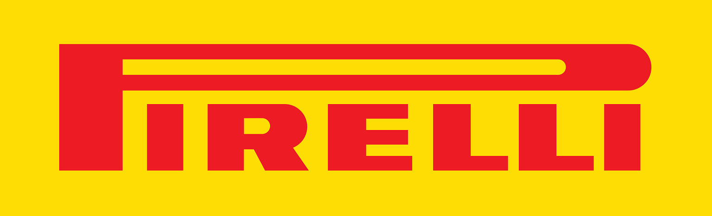

¿Quienes somos?
Pirelli es la única proveedora oficial del Campeonato Mundial de Superbikes desde 2007 y también provee al Campeonato del Mundo de Rallyes desde 2008. La empresa ha competido en la Fórmula 1 en tres periodos distintos, ganando 44 Grandes Premios de 200 disputados. Pirelli volvió a la Fórmula 1 como proveedor único en 2011 y también provee a la GP2 y GP3 desde 2010. Pirelli ha contado con Nick Heidfeld, Romain Grosjean, y Pedro de la Rosa como pilotos de pruebas y otros pilotos como Lucas Di Grassi y Jaime Alguersuari también han probado para la marca.
¿Dónde Encontrarnos?
Familia de Neumaticos
- Pirelli Zero: Producto de Ultra Alto Rendimiento combina el conocimiento de Pirelli adquirido a lo largo de décadas en el automovilismo competitivo
- Pirelli Cinturato: diseñada para conductores que apuestan por el bajo impacto ambiental. Debido a su arquitectura, estos modelos permiten un ahorro de combustible, además, en su fabricación usa materiales eco-friendly
- Pirelli Scorpion: Aprovecha los materiales, estructuras y patrones de la banda de rodamiento para obtener un peso reducido y menor resistencia a la rodadura, haciendo que se consuma una menor cantidad de combustible y disminuyendo las emisiones de CO2. Incluye modelos para carretera y para todo terreno
- Pirelli Scottzero: Está diseñada específicamente para su conducción en invierno.
- Pirelli Ice: especial para ser conducida en situaciones de frío extremo, ya que permite un buen control y agarre en nieve.
Pirelli desde 2011 es la única proveedora de neumáticos en la Fórmula 1:
 |  |  |  |  |
| Medio | Lluvia | Duro | Blando | Intermedio |
Heche un vistazo a nuestros productos
Acerca de Nosotros